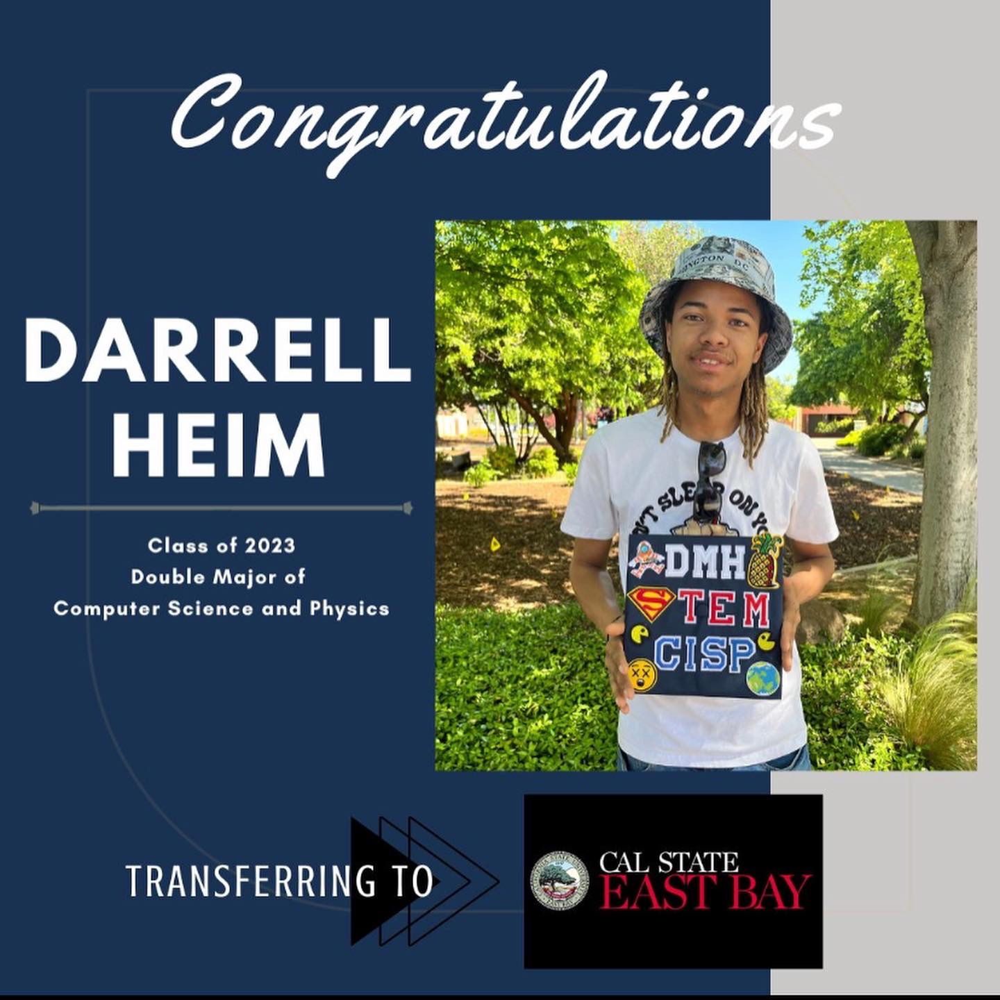

Hi, my name is Darrell Heim. I am a Computer Science major with a strong interest in programming, Database management, and web development.
Biography
Early Life
I was born at Camp Pendleton Marine Corps Base and later moved to Florida, where I grew up and attended school k-12th grade. My early experiences helped shape my values of discipline, honesty, hard work, and lifelong learning.
Adulthood
Like everyone else my adult hood was shaped by my adolescence. I spent time my time after high school coursework working a part time job. During my experiences in college i maintained employment at a variety of jobs that are listed in the projects and work experience tab. During my time balancing coursework and employment I learned many skills most valuable being my ability to learn quickly, communicate effectively, and take pride in all the work that I do.

Education
Choctawhatchee High School
High School Diploma
American River College
Associate of Science in Computer Science
American River College
Associate of Science in Mathematics and Physical Science
California State University EastBay (2026)
Bachelor of Science in computer Science
Relevant Coursework
Introduction to Programming (C++ / Java fundamentals, problem-solving, algorithms)